1.1 Introduction
Nuvoton ICP 도구는 Nuvoton이 개발한 NuMicro MCU용 프로그래밍 및 생산 도구입니다. Nuvoton의 Cortex-M 및 8051 1T 제품을 프로그래밍할 수 있습니다. ICP는 In-Circuit 프로그래밍의 약자로 비어 있고 펌웨어가 설치되지 않은 칩의 플래시 메모리에 펌웨어를 프로그래밍할 수 있음을 의미합니다.
ICP 도구는 USB 케이블과 Nuvoton의 자체 Nu-Link 어댑터를 통해 대상 장치에 연결하는 데스크탑 소프트웨어 애플리케이션입니다. 디버거 포트를 통해 대상 장치의 자동 프로그래밍을 수행할 수 있습니다. 이 도구는 "온라인"(NuLink가 PC에 연결됨)과 "오프라인"(NuLink가 PC에 연결할 필요가 없음)의 두 가지 작동 모드를 지원합니다.
1.2 Supported Devices
지원되는 장치 표를 보려면 다음 하이퍼링크를 클릭하십시오: 지원되는 장치 링크.
사용자는 http://www.nuvoton.com에서 NuMicro 칩의 데이터시트를 다운로드할 수 있습니다.
1.3 Features
- 대상 칩에 대한 회로 내 프로그래밍
- 온라인 및 오프라인 프로그래밍 모드
- 대상 칩의 플래시 메모리에 데이터를 백업합니다.
- Nu-Link 어댑터의 SPI 플래시 메모리에 데이터를 백업합니다.
- 대상 칩에 일련번호를 씁니다.
- Limit on maximum programming counts
- 온라인 및 오프라인 프로그래밍을 위한 안전한 데이터 전송
- 온라인 및 오프라인 모드 모두에 대한 자동 프로그래밍
2.1 System Requirements
ICP 도구 시스템을 설치하기 위한 하드웨어 및 소프트웨어 요구 사항은 다음과 같습니다.
- 최소 512MB DRAM
- 최소 10GB의 여유 디스크 공간
- Windows 7 이상 버전
2.2 Hardware Installation
USB 케이블을 사용하여 PC 호스트와 Nu-Link를 연결합니다.
디버깅 인터페이스를 사용하여 Nu-Link와 대상 칩을 연결합니다.
2.3 Software Installation
설치 프로그램 패키지를 실행하여 소프트웨어를 설치합니다.
2 ICP 도구 준비
패키지를 설치한 후 ICP 도구를 실행하면 아래 대화 상자가 표시됩니다.
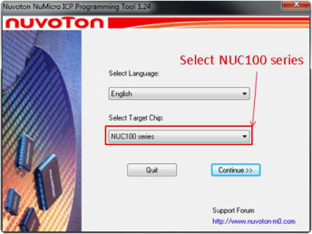
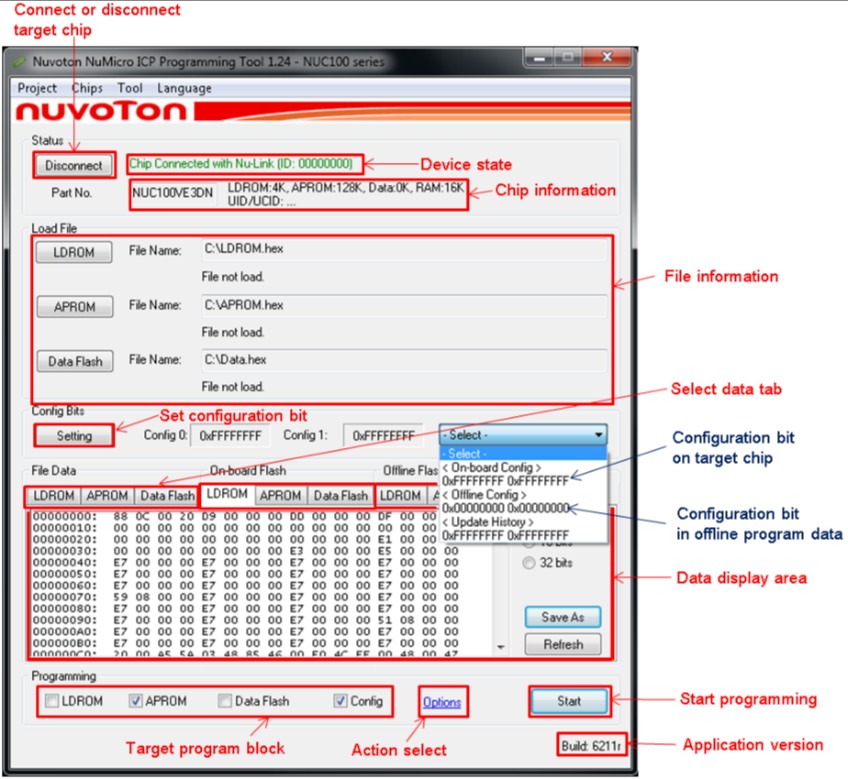
3 ICP 도구 및 Nu-Link 어댑터의 3가지 작동 모드
이 장에서는 ICP 도구 및 Nu-Link 어댑터의 작동 모드에 대해 설명합니다.
3.1 ICP 도구 모드
ICP 도구는 "온라인"과 "오프라인"이라는 두 가지 프로그래밍 모드를 지원합니다.
3.1.1 Online Programming Mode
온라인 모드에서 프로그래밍하려면 그림 4-13의 "오프라인 프로그래밍 모드" 옵션이 선택 해제되어 있는지 확인하고 그림 2-2의 ICP 도구 "시작" 버튼을 클릭하세요.
대상 장치는 Nu-Link에 연결되어 있어야 합니다.
3.1.2 Offline Programming Mode
그림 4-13의 "오프라인 프로그래밍 모드" 옵션이 선택되어 있으면 ICP 도구는 오프라인 프로그래밍 모드에서 프로그래밍합니다.
먼저 ICP 도구 "시작" 버튼을 클릭하여 Nu-Link의 SPI 플래시에 데이터를 프로그래밍합니다. (일부 부품 번호의 경우 이 단계에서 대상 장치를 Nu-Link에 연결해야 합니다.)
다음으로, ICP 도구를 사용하지 않고 Nu-Link 어댑터의 버튼만 누르면 오프라인 프로그램을 수행할 수 있습니다(그림 3-1 참조).
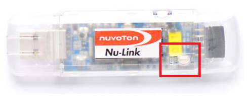
Nu-Link, Nu-Link-Pro 및 Nu-Link2-ME에는 오프라인 데이터를 저장하기 위한 SPI 플래시만 있습니다.
Nu-Link2-Pro의 경우 오프라인 데이터를 세 가지 다른 위치에 저장할 수 있습니다.
1. USB flash drive
2. SD card
3. SPI 플래시
위의 순서는 Nu-Link2-Pro 오프라인 다운로드를 위한 인터페이스를 감지하는 우선순위이기도 합니다.
오프라인 다운로드를 위해 USB 플래시 또는 SD 카드 인터페이스를 사용하려면 다음 단계를 따르세요.
1. 메뉴바의 '도구' -> '오프라인 USB/SD 파일 생성'을 이용하여 'NuLink2.us' 파일을 저장하고 파일을 USB 플래시 드라이브나 SD 카드에 끌어다 놓습니다.
2. USB 플래시 드라이브 또는 SD 카드를 Nu-Link2-Pro 어댑터에 연결합니다.
3. Nu-Link2-Pro 어댑터의 버튼을 눌러 오프라인 다운로드 모드로 전환하고 오프라인 데이터를 대상 칩으로 즉시 다운로드하기 시작합니다.
3.2 Nu-Link 어댑터의 LED 상태
Nu-Link 어댑터의 동작 상태별 LED 표시 상태는 다음 표와 같습니다.
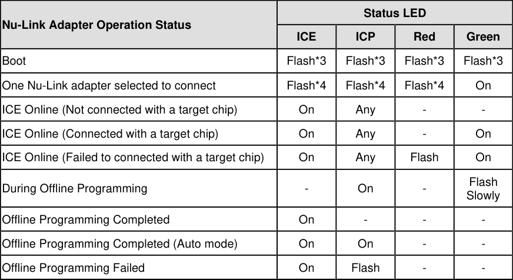
4 ICP 도구 사용 시작
이 장에서는 ICP 도구의 일반적인 작업을 소개합니다. 그림 4-1을 참조하세요.
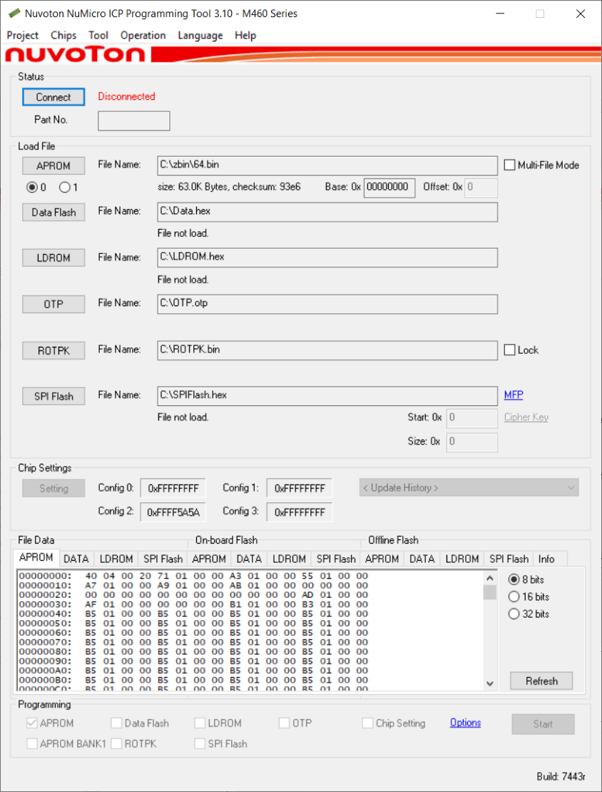
4.1 Menu Bar
메뉴 표시줄은 아래에 설명되어 있습니다.
프로젝트
◼ *.icp 프로젝트 파일을 가져오고 내보냅니다. 이 명령은 사용자 설정을 저장하고 로드할 수 있을 뿐만 아니라 펌웨어 이미지 보호도 수행할 수 있습니다.
Chips
◼ 다른 칩 간에 전환하세요.
도구
◼ Nu-Link 인증서 파일 생성
◆ ICP 도구 온라인 모드의 경우 사용자는 특정 Nu-Link 어댑터에 대한 인증서를 생성할 수 있습니다.
자세한 내용은 "펌웨어 이미지 보호(온라인 프로그래밍 모드)" 장을 참조하십시오.
◼ 보안 부팅 키 파일 생성(M480만 해당)
◆ 이 옵션은 M480 시리즈에서만 사용됩니다.
◼ OTP 메모리 파일 생성
◼ 오프라인 USB/SD 파일 생성
◆ Nu-Link2-Pro에만 해당됩니다. 3.1.2장을 참조하세요.
◼ 키 쌍 생성 및 서명 이미지
◆ 오픈 소스 도구인 imgtool을 사용하여 키 쌍을 생성합니다. 개인 키는 이미지 서명에 사용될 수 있으며 공개 키는 보안 부팅을 위한 ROTPK로 사용될 수 있습니다.
◆ M460의 자세한 사용법은 어플리케이션 노트 4장을 참고하세요.
◼ 파일 병합 도구
◆ 여러 개의 bin 파일을 하나로 병합할 수 있는 유틸리티를 실행합니다.
Operation
◼ Nu-Link에서 오프라인 데이터 삭제
◆ Nu-Link 어댑터의 SPI 플래시에 저장된 오프라인 데이터를 삭제합니다.
◼ 전체 대상 칩 삭제
◆ 어떠한 경우에도 대상 칩 플래시 전체를 강제로 삭제하십시오.
◼ 하드웨어 리셋 대상 칩
◼ 시스템 재설정 대상 칩
Language
◼ “영어”, “간체 중국어”, “번체 중국어” 사이를 전환하세요.
Help
◼ 사용자 매뉴얼 읽기
◼ 버전 확인
◆ Nuvoton 웹사이트에서 새로운 릴리스 버전이 있는지 확인하세요.
4.2 Connection Status
- Before connected
ICP 도구는 사용자가 "연결" 버튼을 클릭하면 대상 칩 연결을 시도합니다.
- USB 어댑터가 성공적으로 연결된 후 ICP 도구에 "ICE 연결됨"이 표시됩니다.
- 대상 칩이 성공적으로 연결된 후 ICP 도구에 칩 정보가 표시됩니다.
4.3 파일 로드
- 프로그래밍을 위한 파일 선택
프로그래밍할 파일을 선택합니다. 그러면 파일 크기와 체크섬 정보가 표시됩니다.
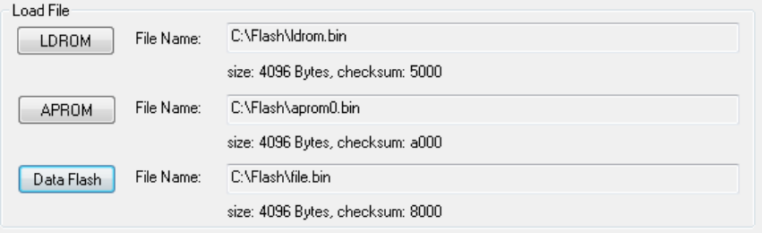
- 지원되는 파일 형식:
지원되는 파일 형식에는 bin 또는 Intel hex(Intel 8, 16 및 32) 파일 형식이 포함됩니다.
4.4 Configuration Bits
선택한 블록을 먼저 삭제한 후 플래시 블록을 별도로 프로그래밍하고 검증 작업을 수행하는 과정입니다.
플래시 블록 프로그래밍 순서는 => 구성 => APROM => LDROM => 데이터 플래시입니다.
구성 비트 섹션은 구성 비트 설정에 사용됩니다.
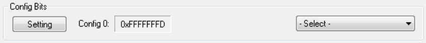
“설정” 버튼을 클릭하면 칩 옵션 양식이 표시됩니다.
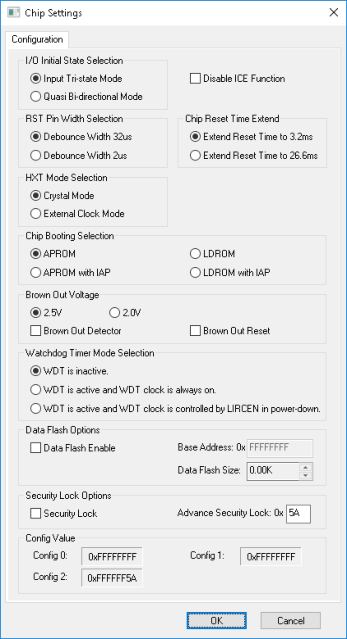
Configuration selection list
- "온보드 구성"은 대상 칩에서 읽은 구성 비트를 보여줍니다.
- "오프라인 구성"은 이전에 오프라인 프로그래밍을 위해 저장한 Nu-Link에서 읽은 구성 비트를 보여줍니다.
- "업데이트 기록"은 기록 구성을 보여줍니다.
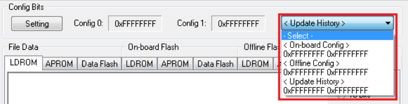
4.5 Dump Data
새로 고치면 데이터 정보 섹션에 "파일 데이터", "온보드 플래시" 및 "오프라인 플래시"를 포함하여 플래시 데이터 정보의 세 부분이 각각 표시됩니다.
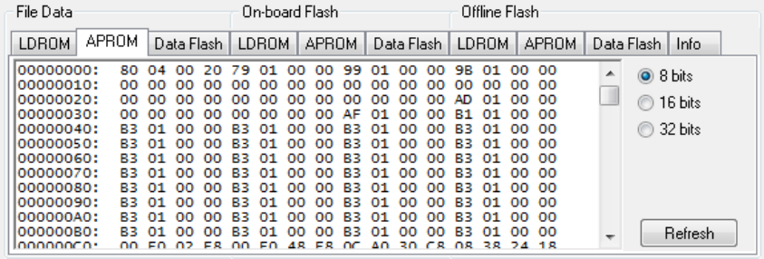
- 파일 데이터
- “파일 로드” 그룹에서 선택한 파일 내용.
- On-board Flash
- 대상 칩의 내장 플래시에 프로그래밍된 데이터입니다.
- Offline Flash
- Nu-Link 어댑터의 SPI 플래시에 대한 오프라인 데이터입니다.
- 정보 탭에는 온라인 및 오프라인 프로그래밍 모드의 다운로드 정보가 표시됩니다.
4.6 Programming Options
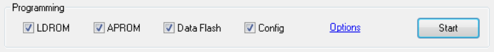
- Target programming block
사용자는 APROM, 데이터 플래시 또는 LDROM을 별도로 프로그래밍할 수 있습니다.
온라인/오프라인 프로그래밍 모드에서 사용자는 그림 4-12에 표시된 대로 대상 프로그래밍 블록을 설정해야 합니다. 그리고 사용자는 그림 4-13과 같이 프로그램 옵션에서 프로그램, 확인 및 삭제 작업을 선택할 수 있습니다.
사용자가 그림 4-13과 같이 "전체 칩 지우기" 옵션을 선택하면 ICP 도구는 전체 대상 칩(APROM, LDROM, 데이터 플래시 및 구성 비트)을 지웁니다.
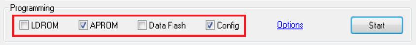
- Programming Options
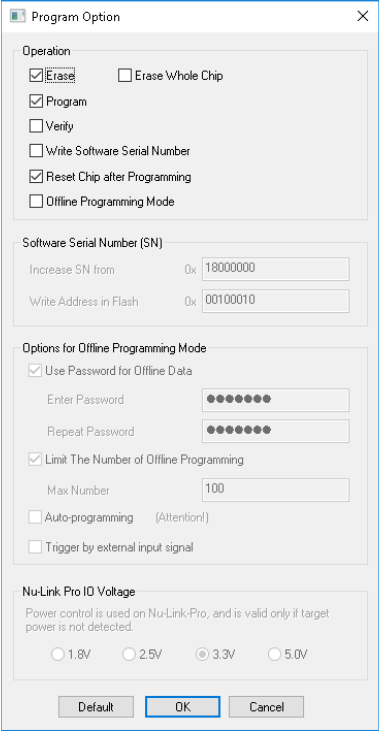
- 동작 그룹에는 삭제, 프로그램, 검증, 오프라인 프로그래밍 모드 옵션 설정이 포함됩니다.
- 사용자는 "소프트웨어 일련 번호 쓰기"를 활성화하고 "SN 시작 값"과 "SN이 저장된 대상 플래시 주소"를 할당할 수 있습니다.
- 사용자는 오프라인 프로그래밍 모드에 대한 비밀번호와 보안 문제에 대한 최대 프로그래밍 수 제한을 지정할 수 있습니다.
- "자동 프로그래밍"을 활성화하고 프로그래밍을 시작하는 경우. Nulink는 대상 칩의 SWD 연결 상태를 감지하기 시작합니다. 연결이 중단되었다가 다시 설정되면 NuLink는 새 칩이 교체된 것으로 간주하고 다음 라운드를 위한 프로그래밍을 시작합니다.
- “외부 입력 신호에 의한 트리거”를 활성화하면 외부 핀을 통해 프로그래밍 프로세스를 제어할 수 있습니다. 자세한 내용은 "UM_Nu-Link2Pro_Debugger_and_Programmer_User_Manual"의 6.3장을 참조하세요.
4.7 Programming Status
ICP 도구에는 진행률 표시줄과 프로그램 상태가 있습니다. 프로그래밍이 완료되면 대화 상자에 성공 또는 실패 정보가 표시됩니다.
5 Firmware Image Protection (Online Programming Mode)
이 장에서는 온라인 프로그래밍 모드의 펌웨어 이미지 보호에 대해 설명합니다.
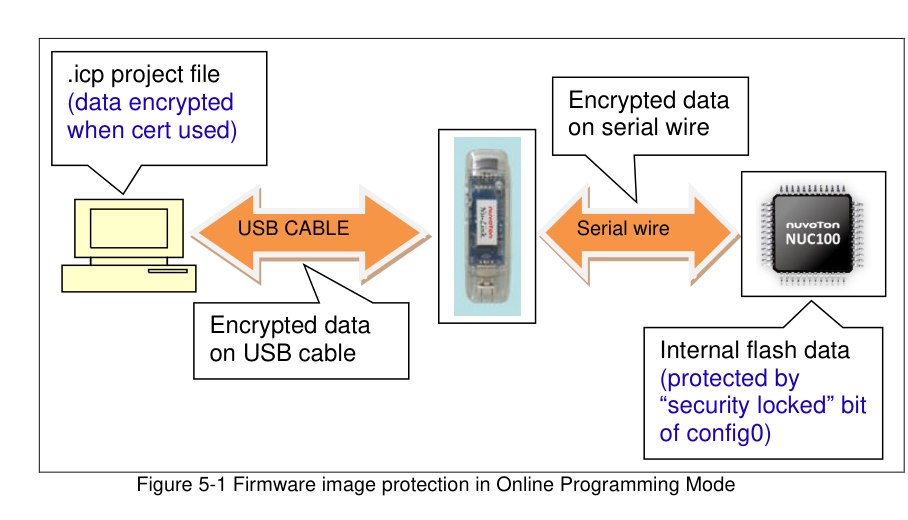
5.1 Nu-Link 인증서 소개
악의적인 행위자가 공급망에 침투하는 것을 방지하기 위해 ICPTool은 악의적인 행위자가 개발자의 펌웨어 이미지를 도난당하는 것을 방지하는 보호 조치를 제공합니다.
이 접근 방식에서는 먼저 ICPTool 및 Nu-Link 어댑터를 사용하여 Nu-Link에 바인딩된 인증서를 생성합니다. 그런 다음 개발자는 이 인증서를 사용하여 펌웨어 이미지를 암호화하고 해당 Nu-Link 어댑터의 생산 수량을 제한합니다.
5.2 Nu-Link 인증서 사용 방법
1단계: 공장에서는 Nu-Link 인증서를 생성하여 개발자에게 보냅니다.
2단계: 개발자는 이 인증서로 펌웨어 이미지를 암호화하고 *.icp 프로젝트 파일을 내보낸 다음 공장으로 다시 보냅니다.
3단계: 공장에서 *.icp 파일을 가져옵니다. 인증서를 생성한 Nu-Link 어댑터만 ICPTool에 인증할 수 있습니다. ICPTool이 코드를 성공적으로 해독하고 이를 대상 칩에 프로그래밍할 때마다 제한에 도달할 때까지 프로그래밍 횟수를 업데이트합니다.
보호 내용은 다음과 같습니다.
- 누군가 개발자의 *.icp 프로젝트 파일을 얻은 경우 특정 인증서 생성 Nu-Link 어댑터 없이는 대상 칩을 프로그래밍할 수 없습니다.
- 내보낸 *.icp 파일의 내용은 암호화됩니다.
- 공장에서는 무제한 프로그래밍 및 생산이 허용되지 않습니다.
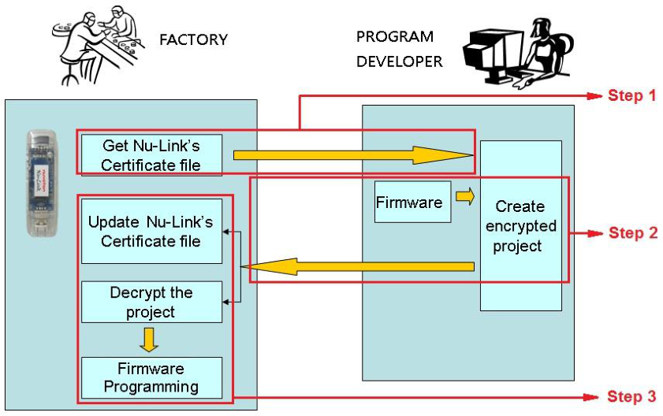
5.3.1 Nu-Link 인증서 파일 생성(공장 측)
Step 1: Connect Nu-Link.
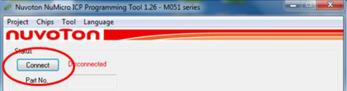
2단계: 인증서 파일을 생성합니다.
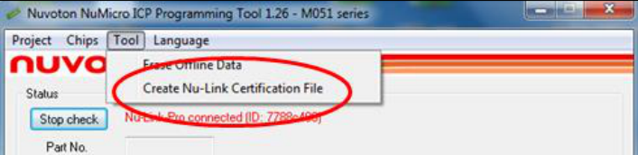
3단계: Nu-Link 인증서 파일(*.ict)을 저장합니다.
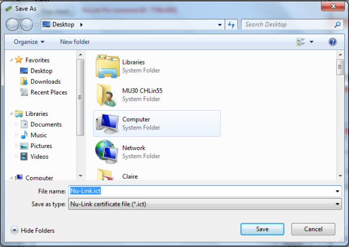
4단계: Nu-Link 인증서 파일을 개발자에게 보냅니다.
5.3.2 암호화된 프로젝트를 내보내기 위해 인증서 파일 및 코드 바인딩(개발자 측)
1단계: 프로젝트 내보내기.
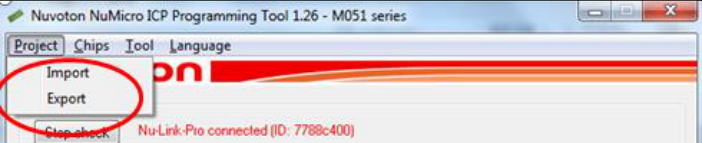
Step 2: Enable settings.
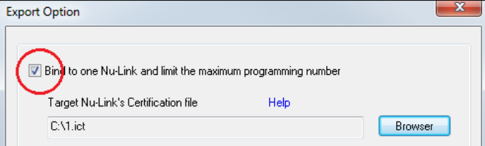
3단계: Nu-Link 인증서 파일 경로를 선택합니다.
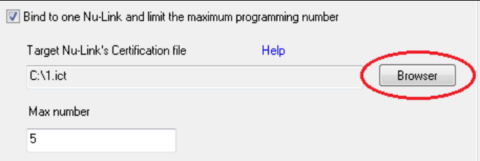
4단계: 최대 프로그래밍 수를 입력하고 프로젝트 내보내기를 시작합니다.
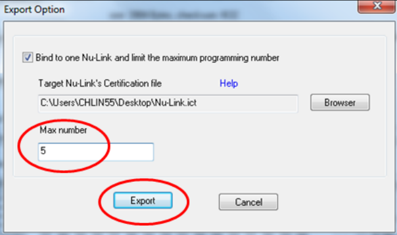
5단계: ICP 프로젝트 파일(*.icp)을 저장합니다.
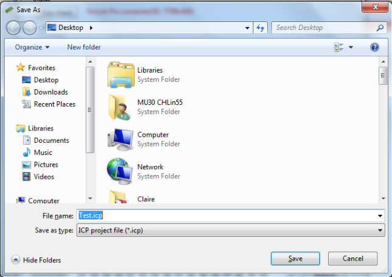
6단계: *.icp 프로젝트 파일을 공장으로 다시 보냅니다.
5.3.3 *.icp 프로젝트 파일 가져오기(공장측)
1단계: 프로젝트 가져오기.
2단계: 시작 버튼을 눌러 프로그래밍합니다.

Step 3: Programming information updates.
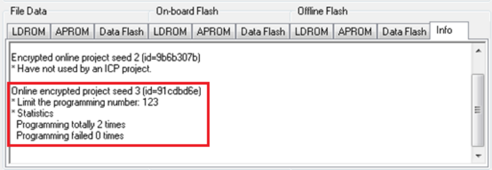
4단계: 공장에서는 "제한된 프로그래밍 수"에 도달할 때까지 생산을 수행할 수 있습니다.
참고: 프로젝트가 최대 프로그래밍 수를 초과하는 경우 사용자는 새 NuLink 인증서를 생성하고 새로운 최대 프로그래밍 수를 설정해야 합니다.
참고: 사용자가 최대 프로그래밍 수를 여러 번 설정하더라도 최대 프로그래밍 수는 초기 설정과 동일하게 유지됩니다.
- 예를 들어:
- ABC.ict를 사용하여 ICP 프로젝트 파일을 생성하고 최대 프로그래밍 수를 10으로 설정합니다.
- 5번 프로그래밍한 후 ABC.ict를 사용하여 두 번째 ICP 프로젝트 파일을 생성하고 최대 프로그래밍 수를 3으로 설정합니다.
- 두 번째 ICP 프로젝트 파일은 여전히 5번 프로그래밍할 수 있습니다.
- 처음에는 최대 프로그래밍 수를 신중하게 설정하는 것이 중요하며 ICP 프로젝트마다 다른 인증서를 생성하는 것이 좋습니다.
6 Firmware Image Protection (Offline Programming Mode)
이 장에서는 오프라인 프로그래밍 모드의 펌웨어 이미지 보호에 대해 설명합니다. Figure 6-1을 참조하십시오.
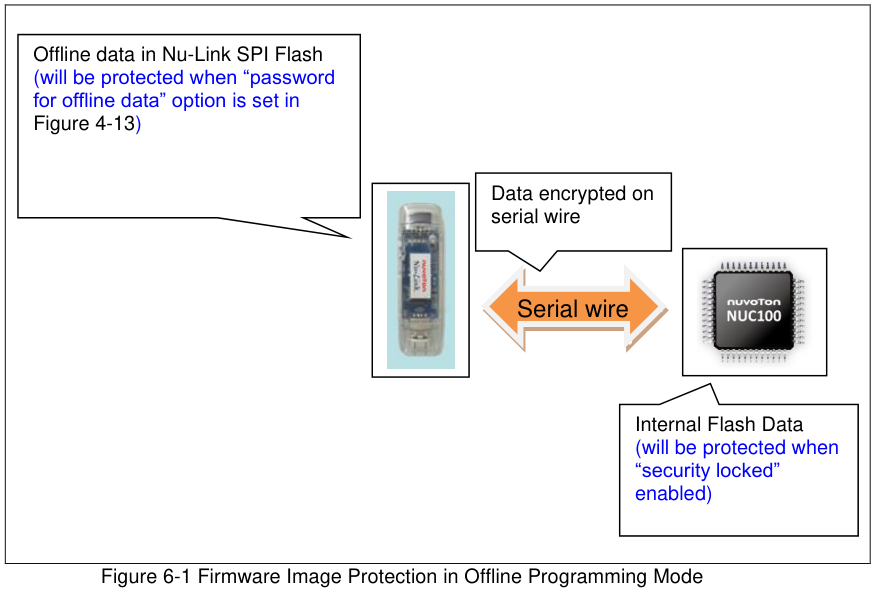
펌웨어 이미지 보호를 위해 그림 4-13의 "오프라인 데이터용 비밀번호"를 설정하고 그림 4-8의 "보안 잠금"을 활성화하는 것이 좋습니다.
오프라인 프로그래밍 수를 제한하려면 그림 4-13과 같이 "오프라인 프로그래밍 수 제한" 옵션을 활성화하십시오.
참고: 자세한 단계는 "AN0001 NuMicro Cortex-M 코드 보호"의 "3.2 ICP 오프라인 모드에서 코드 보호"를 참조하십시오.
7 Nu-Link Firmware Update
펌웨어를 업데이트하려면 아래 단계를 따르십시오
1단계: ICP 도구를 실행합니다. '연결'을 클릭하고 장치 연결을 시작하세요. 펌웨어 버전과 드라이버 버전이 일치하지 않으면 그림 7-1과 같이 펌웨어 업데이트 대화 상자가 표시됩니다.
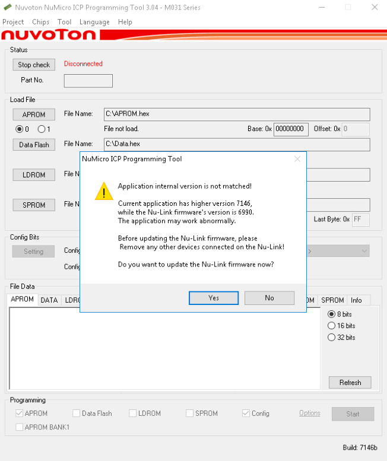
2단계: 그림 7-2와 같이 "예"를 클릭하여 펌웨어를 업데이트합니다.
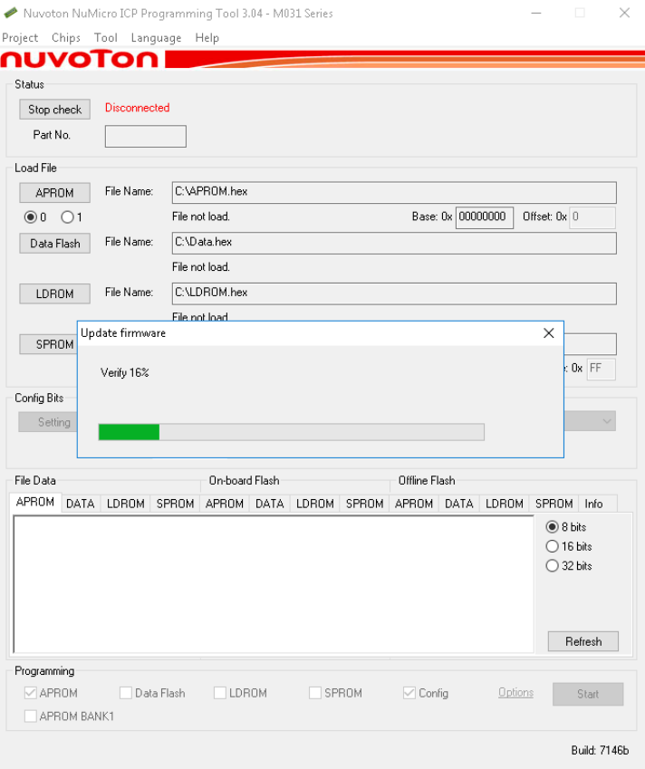
업데이트가 완료되면 사용자는 그림 7-3과 같이 Nu-link를 PC에 다시 연결해야 합니다.
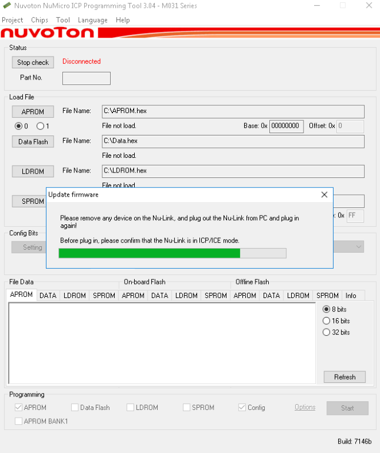
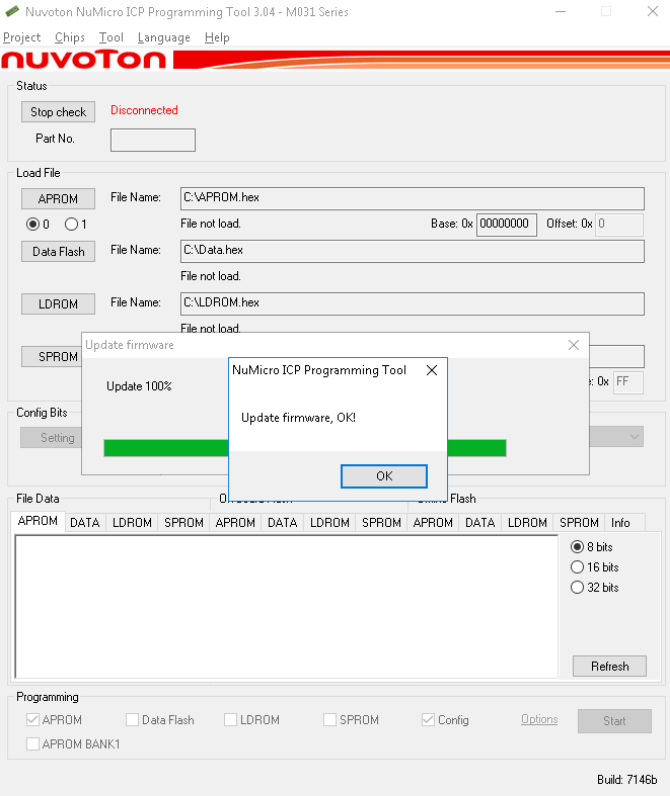
Nu-Link2 어댑터를 사용하는 경우 드래그 앤 드롭 방식을 사용하여 펌웨어를 업그레이드할 수 있습니다.
먼저 Nu-Link2 어댑터의 버튼을 누르고 USB 케이블을 연결하면 컴퓨터는 "Nu-Link2"라는 이름의 디스크로 인식합니다. Nu-Link2 펌웨어를 업그레이드하려면 bin 파일을 이 디스크에 끌어다 놓습니다. 디스크 이름이 "NuMicro MCU"인 경우 Nu-Link2 어댑터 펌웨어 대신 대상 장치 펌웨어가 업그레이드됩니다.
Nu-Link2 어댑터의 역할에 대한 자세한 내용은 다음 링크를 참조하세요:
8.1.1 NUC505 시리즈 메인 창
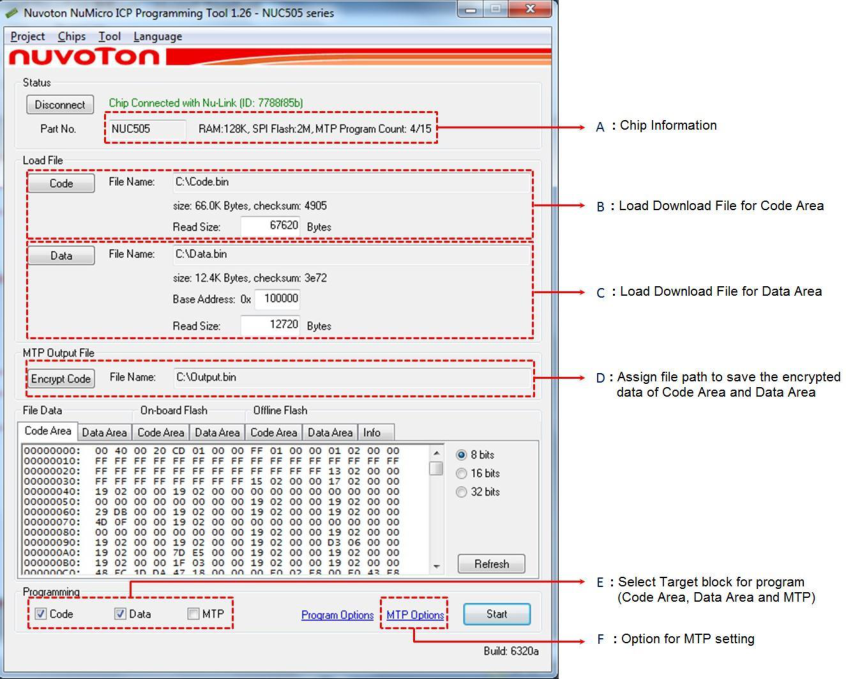
대상 칩이 감지된 후 ICP 도구는 칩 정보(부품 번호, RAM 크기, SPI 플래시 크기 및 MTP 상태 포함)를 읽고 그림 8-1의 섹션 A에 정보를 표시합니다. MTP가 잠겨 있으면 MTP 상태가 빨간색으로 “MTP:Locked”로 표시되고 “MTP” 옵션도 선택 해제됩니다.
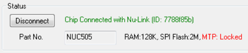
SPI 플래시의 모든 내용을 읽는 것은 시간이 많이 걸리기 때문에 할당된 기본 주소(코드 영역은 0x0으로 고정)에서 부분 읽기 및 읽기 크기가 제공됩니다(그림 8-1의 B 및 C 섹션 참조). “기본 주소”와 “읽기 크기”는 각각 다른 입력 형식을 나타냅니다. "기본 주소"는 16진수로 코드화되고 "읽기 크기"는 10진수로 코드화됩니다. 사용자는 "새로 고침"을 클릭하여 SPI 플래시의 모든 범위를 읽을 수 있습니다.
MTP가 프로그래밍된 적이 있거나 이 프로그램에 대해 MTP가 선택된 경우 사용자는 파일 경로를 할당할 수 있습니다(그림 8-1의 섹션 D). 프로그래밍 프로세스가 끝나면 ICP 도구는 코드 영역과 데이터 영역의 암호화된 데이터를 바이너리 파일로 병합하여 지정된 경로에 저장합니다. 사용자는 대상 칩 MTP 키가 사전 프로그래밍되었는지 여부에 따라 암호문/일반 텍스트 바이너리를 사용하여 ICP 온라인/오프라인 프로그래밍을 수행할 수 있습니다. 일반적으로 MTP가 사전 프로그래밍된 경우 암호문을 사용해야 합니다. 자세한 내용은 “AN_0010_ICP_Programming_Guide”를 참조하세요.
대상 보드 프로그래밍을 시작하기 전에 사용자는 프로그래밍할 대상 블록을 선택할 수 있습니다(그림 8-1의 섹션 E).
"MTP 옵션"(그림 8-1의 F 섹션)을 클릭하면 사용자는 MTP 옵션 양식을 열고 MTP 관련 설정을 구성할 수 있습니다.
8.1.2 MTP Options
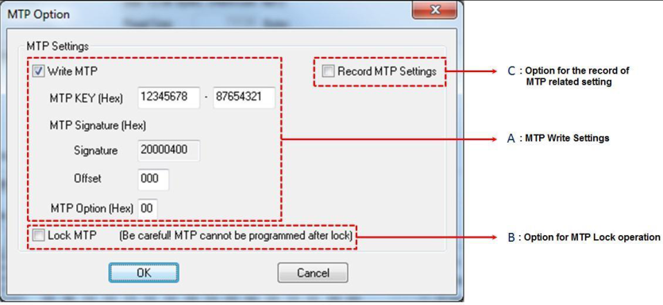
MTP 옵션 양식에서 사용자는 원하는 작업을 선택하고 MTP 키와 서명을 채울 수 있습니다. 옵션과 필드는 아래에 설명되어 있습니다.
- "MTP 쓰기": 64비트 키, 32비트 서명, 12비트 오프셋 및 1바이트 옵션을 16진수 코드 입력 형식으로 작성합니다. 코드 영역에 대한 파일이 로드되면 도구는 해당 32비트 값을 검색하고 "오프셋" 주소에 따라 "서명"을 자동으로 채웁니다.
32비트 서명은 프로그래밍된 바이너리를 인증하는 데 사용됩니다. SPI 플래시의 서명이 사용자 입력과 일치하지 않으면 시스템이 부팅되지 않습니다.
서명은 인터럽트 벡터 테이블의 끝 부분 이후에 위치하는 것이 좋습니다(예: 0x100).
MTP 옵션(Hex) 바이트는 인증을 수행하는 또 다른 방법이며 선택 사항이므로 사용자는 특별한 필요가 없는 경우 이를 무시할 수 있습니다.
- "MTP 잠금":Lock MTP. MTP cannot be programmed after lock.
- "MTP 설정 기록":이 옵션을 선택하면 “확인”을 클릭한 후 MTP 옵션 대화 상자의 MTP 키 및 서명을 포함한 MTP 설정이 기록됩니다. ICP 도구를 다시 열면 이전 MTP 설정이 복원됩니다.
8.2.1 M480 시리즈 메인 창
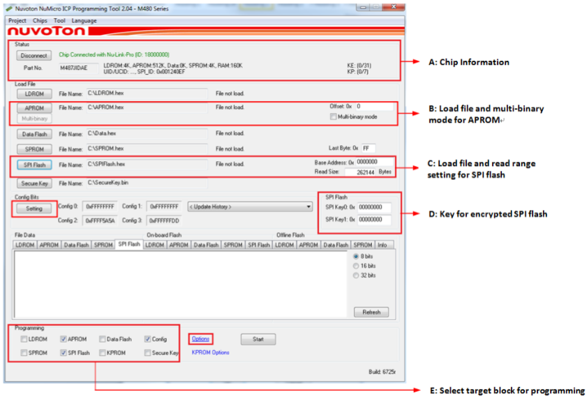
섹션 A: 대상 칩 정보의 부품 번호, LDROM, APROM, 데이터 플래시, SPROM, RAM 크기 및 SPI 플래시 ID를 표시합니다.
섹션 B: 프로그래밍 APROM 파일 경로 로드 또는 다중 바이너리 모드를 사용하여 여러 바이너리 파일 경로 로드.
섹션 C: SPI 플래시 프로그래밍 또는 읽기를 위한 프로그래밍 SPI 플래시 파일 경로 및 시작 주소 설정 및 읽기 크기를 로드합니다. SPI 플래시의 모든 내용을 읽는 데 시간이 많이 걸리기 때문에 할당된 기본 주소 및 읽기 크기에서 부분 읽기가 제공됩니다.
“기본 주소”와 “읽기 크기”는 각각 다른 입력 형식을 나타냅니다. "기본 주소"는 16진수로 코드화되고 "읽기 크기"는 10진수로 코드화됩니다. 사용자는 "새로 고침" 버튼을 클릭하여 SPI 플래시의 특정 범위를 읽을 수 있습니다.
섹션 D: 사용자는 암호화된 파일 데이터를 SPI 플래시에 프로그래밍하기 위해 SPI key0 및 key1을 할당할 수 있습니다. SPI key0 값이 0이거나 SPI key1 값이 0이면 ICP 도구는 파일 데이터를 암호화하지 않습니다.
섹션 E: 프로그래밍할 대상 칩 블록을 선택합니다.
"연결" 버튼을 클릭하면 ICP 도구가 칩 정보(부품 번호, 내부 플래시 크기, RAM 크기, SPI 플래시 ID 및 KPROM 상태 포함)를 읽고 정보를 표시합니다. SPI 플래시가 감지되지 않으면 값은 0xFFFFFFFF이며 그림 8-5에서는 “SPI 플래시” 옵션도 선택 해제되어 있습니다.
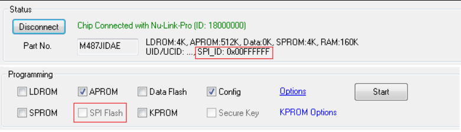
그림 8-4에서 구성 비트 "설정" 버튼을 클릭하면 칩 옵션 화면이 표시됩니다. Chip Options 화면에서는 그림 8-6의 대상 칩의 SPIM 기능 핀 상태에 따라 SPIM 다기능 핀 옵션을 선택할 수 있습니다. SPIM 설정 구성을 프로그래밍한 후 ICP 도구는 유효한 SPI ID 값을 감지하고 "SPI 플래시" 옵션을 활성화합니다.
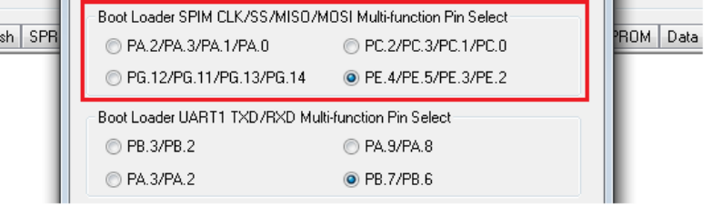
8.2.2 SPI Flash Programming
ICP 도구 SPI 플래시 프로그래밍은 할당된 SPI 키를 통해 암호문 또는 일반 텍스트가 될 수 있습니다.
SPI key0 또는 key1 값이 0이면 ICP 도구는 바이너리 파일을 SPI 플래시로 암호화하지 않고 데이터를 프로그래밍합니다. SPI 플래시 데이터는 일반 텍스트이기 때문에 사용자는 그림 8-7의 프로그램 옵션 양식에서 SPI 확인 옵션을 확인하여 SPI 플래시 데이터를 확인할 수 있습니다.
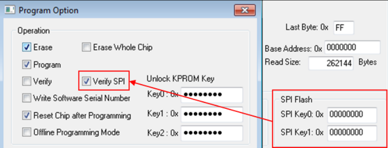
SPI key0 및 key1 값이 0이 아닌 경우 ICP 도구는 SPI key0 및 key1을 사용하여 바이너리 파일 및 프로그램을 SPI 플래시로 암호화합니다. SPI 플래시 데이터는 암호문이므로 그림 8-8의 프로그램 옵션 양식에서 "SPI 확인" 옵션이 비활성화됩니다.
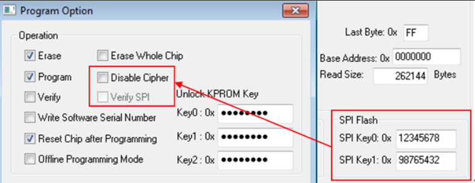
사용자는 그림 8-8의 "Disable Cipher" 옵션을 선택하여 바이너리 파일을 암호화하지 않고도 SPI 키 값과 프로그램 데이터를 SPI 플래시에 보관할 수도 있습니다.
SPI 플래시에 암호문 데이터를 프로그래밍한 후 사용자는 암호화된 SPI 플래시 데이터를 그림 8-9의 파일에 저장할 수 있습니다. 아래 단계를 따르십시오.
1단계: "SPI 플래시" 온보드 플래시 탭을 선택합니다.
2단계: "새로 고침" 버튼을 클릭하면 ICP 도구가 플래시 데이터를 다시 읽습니다.
3단계: "다른 이름으로 저장" 버튼을 클릭하고 암호문을 바이너리 파일로 저장합니다.
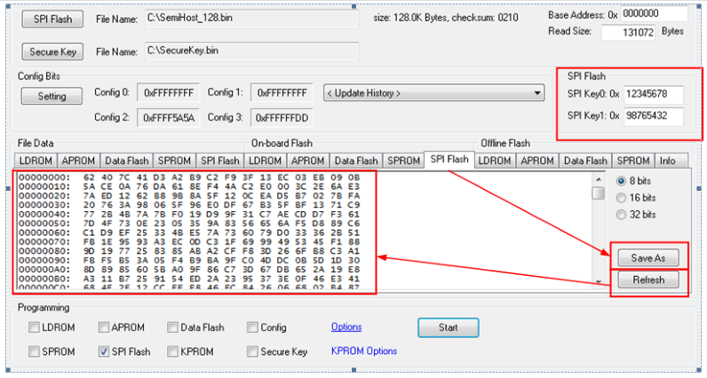
8.2.3 KPROM 설정
ICP 도구는 KPROM 및 APROM 영역의 쓰기 보호를 위한 KPROM 프로그래밍을 제공합니다.
프로그래밍 옵션에서 “KPROM” 옵션을 선택하고 “KPROM 옵션”을 클릭하여 그림 8-10에서 KPROM 키 설정을 설정합니다.
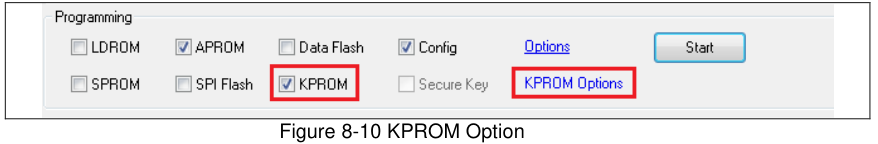
KPROM 키 설정 양식에서 사용자는 원하는 작업을 선택하고 KPROM 키와 오류 키 재시도 횟수를 입력할 수 있습니다. KPROM 키는 16진수 코드 입력 형식의 32비트 3개입니다. 사용자는 그림 8-11에서 key0 ~ key2, 오류 키 재시도 횟수 및 Config 또는 SPROM의 선택적인 쓰기 금지 영역을 설정할 수 있습니다.
“확인” 버튼을 클릭하면 KPROM 키 설정이 기록됩니다. 그러나 ICP 도구가 다시 열리면 이전 KPROM 키 설정이 기록되지 않습니다. 사용자는 KPROM 키 설정을 다시 설정해야 합니다.
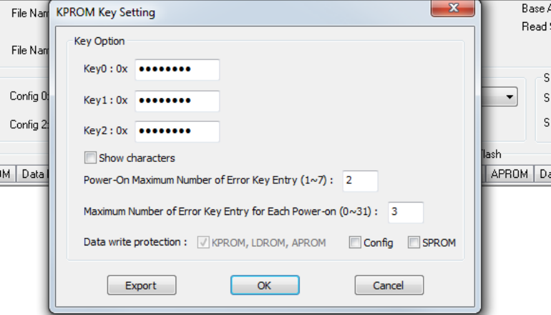
8.2.4 보안 부팅 키 및 정보 블록 프로그래밍
ICP 도구는 보안 부팅 키와 정보 프로그래밍을 제공합니다. 보안 부팅 키 프로그래밍은 보안 부팅 키 파일을 로드해야 하므로 사용자는 그림 8-12의 "도구" -> "보안 키 파일 생성" 메뉴 항목을 사용하여 보안 부팅 키 파일을 생성할 수 있습니다.
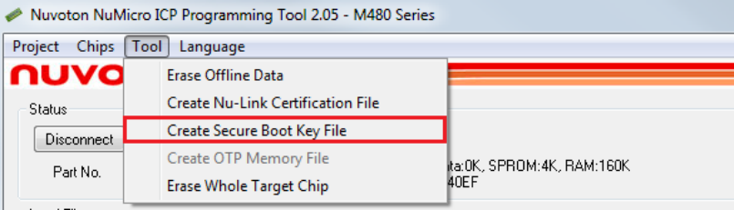
보안 키 파일 생성 양식에서 사용자는 그림 8-13에서 원하는 작업을 선택할 수 있습니다. 옵션과 필드는 아래에 설명되어 있습니다.
- "생성하다":
보안 부팅 키를 무작위로 생성합니다. 사용자는 키 필드에서 키를 편집할 수도 있습니다.
- "내보내다":
키 필드의 현재 보안 부팅 키를 파일에 저장합니다.
- "가져오기":
필드에서 보안 부팅 키 파일과 로드 키를 선택합니다.
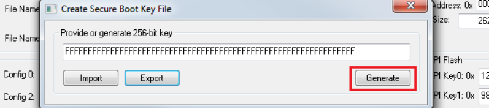
보안 부팅 키와 정보 블록을 프로그래밍하려면 다음 단계를 따르세요.
1단계: “Secure Key(보안 키)” 버튼을 클릭하여 보안 부팅 키 파일을 로드합니다.
2단계: 프로그래밍 옵션에서 대상 블록을 선택하고 대상 블록(LDROM, APROM 또는 SPI 플래시)의 해당 바이너리 파일을 로드합니다.
단계3: 그림 8-14에서 "부팅 로더" 옵션을 활성화하려면 "설정" 버튼을 클릭하세요.
4단계: “KPROM” 버튼을 선택하고 “KPROM 옵션”을 클릭하여 KPROM 키 설정을 지정합니다.
5단계: 프로그래밍 옵션에서 "보안 키" 옵션을 선택하고 "시작" 버튼을 클릭하여 그림 8-15에서 프로그래밍합니다.
참고: "부트 로더" 옵션이 활성화되면 프로그래밍 옵션에서 구성, KPROM 및 보안 키 옵션을 활성화해야 합니다.
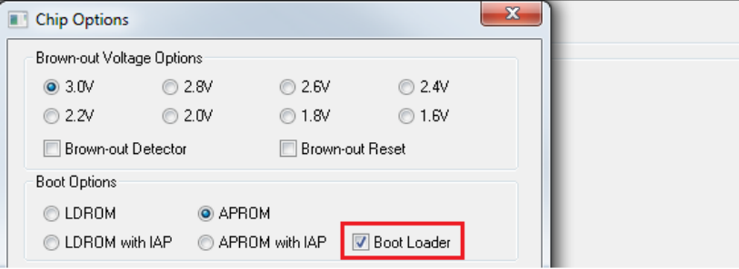
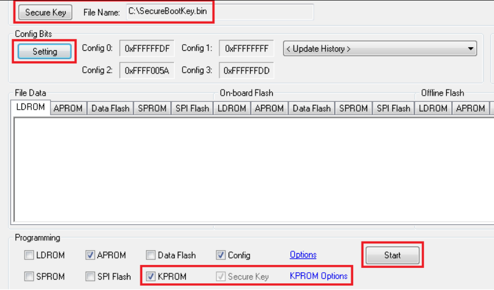
8.2.5 Multi-binary Mode
사용자는 여러 바이너리 파일을 로드하여 APROM 영역을 별도로 프로그래밍할 수 있습니다.
다중 바이너리 모드에서 사용자는 그림 8-16에 표시된 대로 "다중 바이너리 모드" 옵션을 활성화해야 합니다.
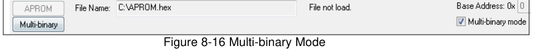
그림 8-17과 같이 “Multi-binary” 버튼을 클릭하면 “Load Multiple Binary File” 양식이 표시됩니다.
“여러 바이너리 파일 로드” 형식에서 사용자는 여러 파일을 로드하고 시작 주소와 보호 속성을 설정할 수 있습니다.
- "추가" 버튼을 사용하여 파일을 로드하고 목록에 항목을 삽입합니다.
- 목록에서 항목을 삭제하려면 "제거"버튼을 사용하십시오.
- 목록에 오프셋 값과 보호 열 항목을 설정하려면 "수정"버튼을 사용하십시오.
- 파일 프로그래밍의 시작 주소를 정의하려면 "오프셋" 값을 설정하십시오.
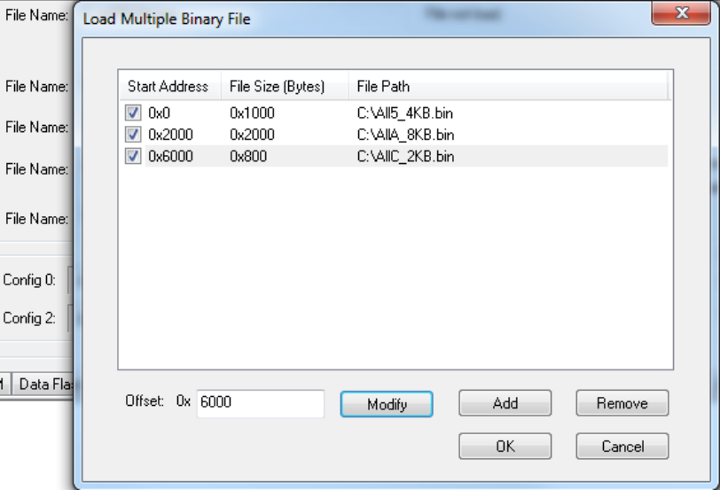